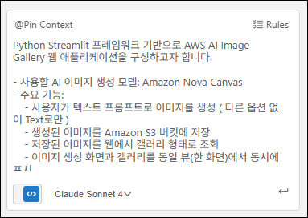
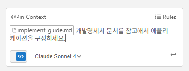
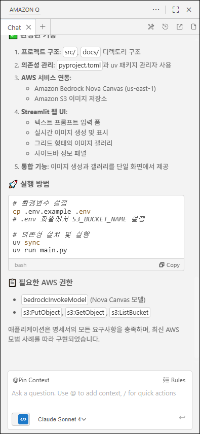
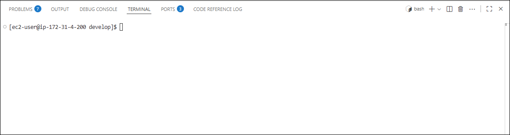
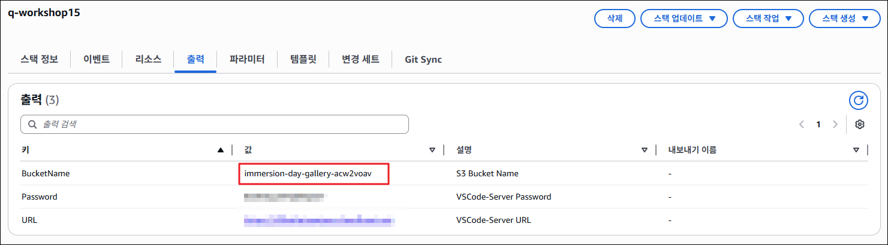
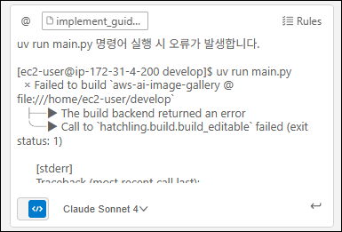
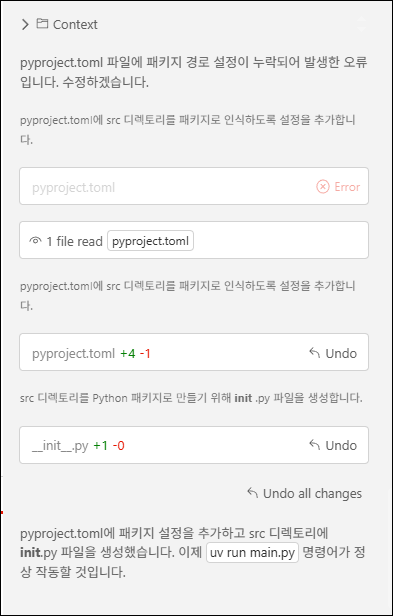
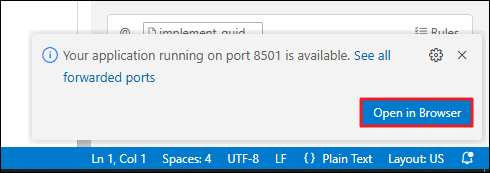
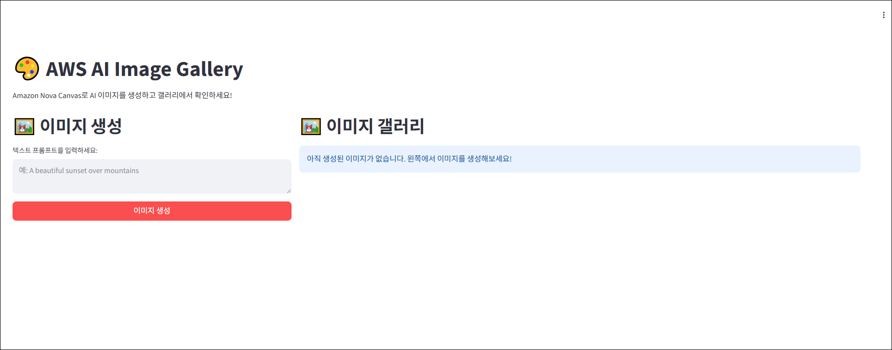
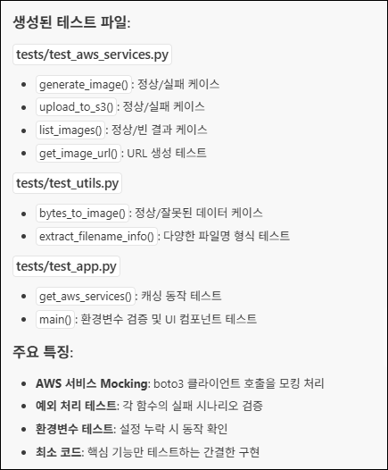

Task 1: 애플리케이션 구현
이 활동에서는 Amazon Q Developer의 Chat, Agent, Rules, MCP 기능을 종합적으로 활용하여 실제 웹 애플리케이션을 처음부터 구축합니다.
명확한 요구사항을 바탕으로 개발 계획을 수립하고, AI와 협업하여 코드를 구현하며, 발생하는 문제를 해결하는 전체 과정을 체험합니다.
🎯 학습 목표
- ✅ 효과적인 프롬프트 작성으로 개발 명세서 생성하기
- ✅ Agent 모드를 활용한 전체 프로젝트 구조 및 코드 자동 생성
- ✅ 생성된 애플리케이션 실행 및 오류 해결
- ✅ 단위 테스트 자동 생성으로 코드 품질 검증
Act 1: 개발 명세서 작성 (Plan)
1-1. 새 채팅 세션 시작하기
-
채팅 입력창에
/clear를 입력하거나, 상단 탭에서 "+" 버튼을 클릭하여 새 채팅을 시작합니다.
새 채팅을 시작하는 이유
이전 대화 기록의 영향을 받지 않도록 깨끗한 상태에서 시작합니다. 프로젝트별로 독립적인 채팅 세션을 유지하는 것이 좋습니다.
1-2. 개발 명세서 생성 요청하기
-
다음 프롬프트를 입력하여 Amazon Q에게 구현 가이드 작성을 요청합니다:
개발 명세서 생성 프롬프트
Python Streamlit 프레임워크 기반으로 AWS AI Image Gallery 웹 애플리케이션을 구성하고자 합니다. - 사용할 AI 이미지 생성 모델: Amazon Nova Canvas - 주요 기능: - 사용자가 텍스트 프롬프트로 이미지를 생성 (다른 옵션 없이 Text로만) - 생성된 이미지를 Amazon S3 버킷에 저장 - 저장된 이미지를 웹에서 갤러리 형태로 조회 - 이미지 생성 화면과 갤러리를 동일 뷰(한 화면)에서 동시에 표시 해당 애플리케이션을 구성하기 위해 아래 항목이 포함된 구현 가이드를 `docs/implement_guide.md` 문서로 작성하세요. (※ 해당 문서 작성 외에 다른 작업은 금지) 1. 요구사항 2. 기술 스택 3. 구현 단계 (최대 5단계) 추가 조건: - 서버 메인 파일은 반드시 `src/app.py`로 지정하세요. - 프로젝트 루트에서 `uv run main.py` 명령어 실행 시 서버가 동작하도록 설정 가이드를 포함하세요. - Bedrock 서비스 관련은 us-east-1 리전을 사용하도록 하세요. - 환경변수는 S3 버킷 이름과 버킷의 리전을 받도록 하세요. - 구현 가이드라인에는 테스트, 배포, 코드 최적화 관련 내용은 포함하지 마세요.효과적인 프롬프트 작성 요소
위 프롬프트는 다음 요소를 포함하고 있습니다:
- ✅ 명확한 목표: "Streamlit 기반 AI Image Gallery 구축"
- ✅ 기술 스택 지정: Amazon Nova Canvas, S3, Streamlit
- ✅ 구체적인 기능 요구사항: 4가지 핵심 기능
- ✅ 산출물 형식 지정:
docs/implement_guide.md문서 - ✅ 제약 조건 명시: 문서 작성만, 코드 생성 금지
- ✅ 추가 조건: 파일 구조, 실행 방법, 환경변수

1-3. 생성된 문서 검토하기
-
docs/디렉토리에implement_guide.md파일이 생성되었는지 확인합니다. -
생성된 문서의 내용을 검토합니다:
- 요구사항: 기능 및 기술 요구사항이 명확히 정의되어 있는가?
- 기술 스택: 필요한 라이브러리와 AWS 서비스가 모두 포함되어 있는가?
- 구현 단계: 5단계 이하로 논리적으로 구성되어 있는가?
LLM의 비결정성 (Non-deterministic Behavior)
동일한 프롬프트를 입력해도 매번 다른 결과가 생성될 수 있습니다. 이는 LLM의 정상적인 특성입니다.
생성된 문서가 요구사항을 만족하지 않는다면:
- 프롬프트를 더 구체적으로 수정하거나
- "이 부분을 더 상세히 작성해줘"와 같은 추가 요청을 하세요.
샘플
implement_guide.md
Act 2: 개발 명세서 기반 구현 (Implement)
2-1. Agent 모드 활성화하기
-
채팅 패널 하단의 "Agentic" 토글을 활성화합니다.
Agent 모드가 필요한 이유
프로젝트 구조 생성, 여러 파일 작성, 의존성 설정 등 다중 파일 작업을 자동으로 수행하기 위해 Agent 모드가 필요합니다.
2-2. 개발 명세서를 Context로 추가하기
- 채팅 입력창에서
@를 입력합니다. - Files 메뉴에서
docs/implement_guide.md를 선택합니다. - 선택한 파일이 입력창 상단에 Context로 표시되는지 확인합니다.
2-3. 애플리케이션 구현 요청하기
-
다음 프롬프트를 입력합니다:
구현 요청 프롬프트
개발명세서 문서를 참고해서 애플리케이션을 구성하세요.한 번에 vs 단계별 구현
소규모 프로젝트 (파일 5개 이하): 한 번에 전체 구현 요청 가능
중대규모 프로젝트 (파일 5개 이상): 단계별로 나누어 구현 권장
- "1단계만 구현해줘"
- "2단계 AWS 서비스 연동 구현해줘"
단계별 구현이 더 높은 품질과 제어력을 제공합니다.

2-4. 생성된 코드 검토하기
Agent가 작업을 완료하면 다음을 확인합니다:
-
생성된 파일 목록:
main.py: 엔트리 포인트pyproject.toml: 프로젝트 설정 및 의존성src/app.py: Streamlit 메인 애플리케이션src/aws_services.py: AWS Bedrock 및 S3 연동.env.example: 환경변수 템플릿
-
코드 Diff 확인:
- 각 파일을 클릭하여 생성된 코드를 검토합니다.
- 구현 가이드의 요구사항이 반영되었는지 확인합니다.

코드 생성 완료!
Agent가 자율적으로 프로젝트 구조를 생성하고 모든 필요한 파일을 작성했습니다!
Act 3: 애플리케이션 실행 및 오류 해결
실습 환경에 따른 차이
이 단계부터는 실습 환경, 생성된 코드, AWS 설정에 따라 결과가 다를 수 있습니다.
3-1. 터미널 열기
-
VS Code에서 Ctrl + ` (백틱) 또는 View → Terminal 메뉴를 선택하여 터미널을 엽니다.

3-2. 환경변수 설정하기
-
.env.example파일을.env로 복사합니다:.env 파일이 이미 존재하는 경우
Agent가 이미
.env파일을 생성했을 수 있습니다. 이 경우cp명령 대신 직접 편집하세요.cp .env.example .env -
.env파일을 열어 다음 환경변수를 설정합니다: S3 버킷 이름은 Cloudformation 스택 출력 화면에서 확인하실 수 있습니다. S3_BUCKET_NAME=immersion-day-gallery-acw2voav S3_REGION=us-east-1 // ap-northeast-2
3-3. 의존성 설치 및 서버 실행하기
-
의존성 설치:
uv sync -
서버 실행:
uv run main.py -
정상 실행 확인
3-4. 오류 발생 시 해결하기
터미널에 오류가 표시된다면:
-
오류 메시지 전체를 복사합니다.
-
Amazon Q에게 오류 해결 요청:
오류 해결 프롬프트
uv run main.py 실행 시 아래와 같은 오류가 발생했습니다. [오류 메시지 전체 붙여넣기] 이 오류를 해결하는 방법을 알려주고, 필요한 코드 수정을 해주세요. -
실제 예시:


-
Amazon Q의 제안을 적용하고 다시 서버를 실행합니다.
3-5. 웹 애플리케이션 확인하기
-
서버가 정상 실행되면, VS Code 우측 하단에 "Open in Browser" 알림이 표시됩니다.
-
"Open in Browser" 버튼을 클릭하여 웹 브라우저에서 애플리케이션을 엽니다.
알림창이 사라진 경우
우측 하단의 종 아이콘 (🔔)을 클릭하여 알림을 다시 표시할 수 있습니다.

-
웹 애플리케이션 UI 확인:

화면이 다를 수 있습니다
생성된 코드에 따라 UI 디자인이 다를 수 있습니다. 핵심 기능(이미지 생성 폼, 갤러리)이 포함되어 있는지 확인하세요.
3-6. 기능 테스트하기
-
이미지 생성 테스트:
-
텍스트 프롬프트 입력 (예: "a cute cat sitting on a chair")
Warning
Amazon Nova Canvas는 아직 영어를 제외한 다른 언어를 지원하지 않습니다. 에러가 발생할 경우, 영어 프롬프트로 재시도 해주세요.
-
"Generate Image | 이미지 생성" 버튼 클릭
- 생성된 이미지가 화면에 표시되는지 확인
-
Act 4: 단위 테스트 자동 생성
애플리케이션이 정상 작동하는 것을 확인했다면, 이제 코드 품질을 검증하기 위한 단위 테스트를 생성합니다.
4-1. 테스트 생성 요청하기
-
Amazon Q에게 다음 프롬프트를 입력합니다:
단위 테스트 생성 프롬프트
src 폴더에 있는 파일의 주요 함수들에 대한 단위 테스트를 작성해주세요. pytest 프레임워크를 사용하고, 다음 사항을 포함하세요: - AWS 서비스 호출을 Mocking 처리 - 정상 케이스 및 예외 케이스 테스트 - 테스트 파일은 tests/test_[].py에 생성
4-2. 생성된 테스트 코드 검토하기
- Amazon Q가 생성한 테스트 파일을 확인합니다: 
4-3. pytest 설치 및 테스트 실행하기
-
test 명령어 실행
uv run pytest -
테스트 결과 확인
출력 결과 예시
ec2-user:~/develop:$ uv run pytest == test session starts == platform linux -- Python 3.9.23, pytest-8.4.2, pluggy-1.6.0 rootdir: /home/ec2-user/develop configfile: pytest.ini plugins: mock-3.15.1 collected 14 items tests/test_app.py .. [ 14%] tests/test_aws_services.py ....... [ 64%] tests/test_utils.py ...F. [100%] == FAILURES = __ TestUtils.test_extract_filename_info_simple_format __ self = <tests.test_utils.TestUtils object at 0x7fe67ed561c0> def test_extract_filename_info_simple_format(self): key = "generated_images/simple_file.png" timestamp, prompt = extract_filename_info(key) > assert timestamp == "simple_file" E AssertionError: assert 'simple_file.png' == 'simple_file' E E - simple_file E + simple_file.png E ? ++++ tests/test_utils.py:43: AssertionError == short test summary info == FAILED tests/test_utils.py::TestUtils::test_extract_filename_info_simple_format - AssertionError: assert 'simple_file.png' == 'simple_file' == 1 failed, 13 passed in 0.56s == -
테스트 결과 제공 및 코드 수정 요청
아래와 같이 테스트가 진행되었습니다. [테스트 결과 내용] 테스트 내용을 참고하여 애플리케이션 코드를 수정하세요. -
다시 테스트하여 결과값 확인 (반복)
4-4. 테스트 커버리지 확인 (선택사항)
더 심화된 검증을 원한다면 코드 커버리지를 확인하세요
-
의존성 설치 및 테스트 커버리지 실행
uv add --dev pytest-cov uv run pytest --cov=src tests/ -
테스트 결과 확인
출력 결과 예시
ec2-user:~/develop:$ uv run pytest --cov=src tests/ == test session starts == platform linux -- Python 3.9.23, pytest-8.4.2, pluggy-1.6.0 rootdir: /home/ec2-user/develop configfile: pytest.ini plugins: mock-3.15.1, cov-7.0.0 collected 14 items tests/test_app.py .. [ 14%] tests/test_aws_services.py ....... [ 64%] tests/test_utils.py ..... [100%] == tests coverage == __ coverage: platform linux, python 3.9.23-final-0 __ Name Stmts Miss Cover ----------------------------------------- src/__init__.py 0 0 100% src/app.py 54 39 28% src/aws_services.py 34 0 100% src/utils.py 15 0 100% ----------------------------------------- TOTAL 103 39 62% == 14 passed in 0.69s ==커버리지 목표
- 80% 이상: 양호
- 90% 이상: 우수
- 100%: 이상적이지만 모든 코드에 필수는 아님
✅ 요약
이 워크숍 활동에서 다음 항목을 실습했습니다:
- ✅ 효과적인 프롬프트 엔지니어링: 명확한 요구사항으로 개발 명세서 생성
- ✅ Agent를 활용한 자동 구현: 전체 프로젝트 구조 및 코드 자동 생성
- ✅ 실전 문제 해결: 오류 발생 시 Amazon Q와 협업하여 해결
- ✅ 기능 검증: 실제 애플리케이션 실행 및 AWS 서비스 통합 확인
- ✅ 단위 테스트 생성: pytest를 활용한 자동 테스트 코드 생성 및 실행
- ✅ 코드 품질 검증: 테스트 커버리지를 통한 품질 확인
🚀 다음 단계
다음 실습에서는 구축한 애플리케이션에 새로운 기능을 추가합니다:
@workspaceContext를 활용한 전체 코드베이스 이해- 기존 구조를 유지하면서 새 기능 통합
- 이미지 필터링 및 검색 기능 추가
- UI/UX 개선